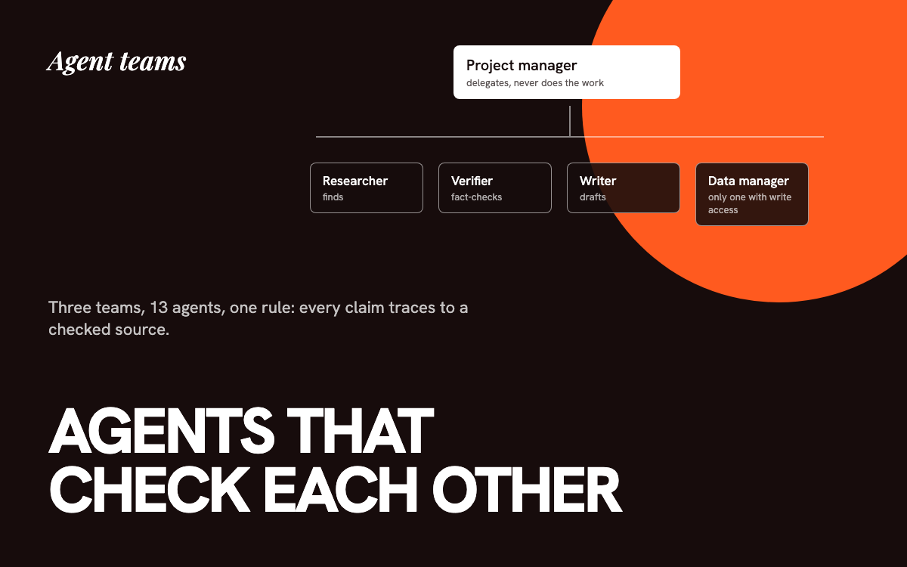

Three AI agent teams that check each other.
Thirteen custom agents in three teams for lead generation, marketing content, and client reports, built so no single agent can invent a fact and pass it on.

The problem
One AI doing everything produces confident mistakes. In lead generation that means emailing a business that already has a website. In client reports it means a made-up number. I needed work split so each step can catch the one before it.
The three teams
- Lead generation: a project manager plus a researcher, verifier, outreach writer, and data manager.
- Marketing content: a director plus a graphic designer, video producer, copywriter, and brand strategist, wired to Canva, Figma, and video tools.
- Client reports: a manager plus a data analyst and a writer.
Design rules
- Managers delegate and never do the work. That keeps judgment and production separate.
- Permissions shape behavior. The writer has no research access, so it can only use facts the verifier confirmed. Only the data manager can write to the lead database, and it checks for duplicates first.
- Finding is not concluding. The researcher surfaces candidates and is told never to decide a business has no website. That call belongs to the verifier.
- One shared reference file per team holds facts, voice rules, and the data schema, so a fix happens in one place.
- Every number needs a source. In reports, figures come from git history, analytics, form counts, or a live check. If a source is missing, the agent says so instead of guessing.
What testing showed
I ran the lead-gen team on two towns. The first run wrote 6 verified leads and caught a hijacked domain and a false "no website" that actually had a booking site. The second wrote 9 verified leads, and I confirmed them directly in the database rather than trusting the agents' summary. The verifier also rejected 4 restaurants that a scraper field had flagged as having no online ordering, by checking each site, and filtered out junk emails.
The marketing and report teams are built and documented but have not yet had a full live run as a team, so I am not claiming results for them.
Outcome
The lead-gen team runs on demand alongside an automated weekday routine and writes to the same queue. The pattern, narrow roles, enforced by tool access, with a verifier in the middle, is the part I would carry to any AI product.
The code
A sanitized copy of this project is public. Client data, keys, and personal details are removed, and sample data stands in where the real data lived.
Tools, stack, and skills
- Stack
- Claude Code subagents, Markdown agent specs
- Models
- Claude
- Tools
- MCP: Canva, Figma, Netlify, Ahrefs, Semrush; Google Maps scraper
- Skills
- Multi-agent design, permission design, prompt engineering, verification workflows, data schema design